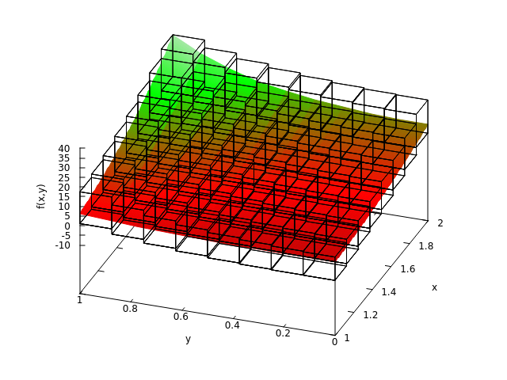

- Generated on for MC++ by
 1.15.0
1.15.0
|
MC++
|
Interval superposition is a set-arithmetic for computing non-convex enclosures in the form of piecewise interval enclosures over a sub-paving of the domain. Formally, given an interval domain \({\bf X} = X_1\times\cdots\times X_n = [\underline{x}_1,\overline{x}_1]\times\cdots\times[\underline{x}_n,\overline{x}_n]\) with \(n\geq 1\), and equi-partitions of size \(p\geq 1\) for each \(X_i\) as
\begin{align*}X_{i,j} = [\underline{x}_i+(j-1)h_i,\overline{x}_i+jh_i], \quad \text{with}\ h_i=\frac{\overline{x}_i-\underline{x}_i}{p}, \quad i=1\ldots n, \quad j=1\ldots p, \end{align*}
an interval superposition model (ISM) of the real-valued function \(f:\mathbb{R}^n\to\mathbb{R}\) on \({\bf X}\) is any interval-valued function \(\mathcal{I}[f]:{\bf X}\to\mathbb{IR}\) given by
\begin{align*}\mathcal{I}[f](x) = \sum_{i=1}^{n} \sum_{j=1}^{q} A[f]_{i,j}\varphi_{i,j}(x_i), \quad \text{with}\ {\bf A}[f]\in\mathbb{IR}^{n\times p}, \quad \text{and}\ \varphi_{i,j}(x_i) = \left\{\begin{aligned} 1 & \ \text{if $x_i\in X_{i,j}$},\\ 0 & \ \text{otherwise},\end{aligned}\right. \end{align*}
such that
\begin{align*}\forall {\bf x}\in {\bf X}, \quad f({\bf x})\in \mathcal{I}[f]({\bf x})\,. \end{align*}
The interval matrix \({\bf A}[f]\) completely determines the enclosure \(\mathcal{I}[f]\), and arithmetic rules have been developed that enable propagation of ISM through expression trees that comprise standard unary and binary operations, such as \(\exp\), \(\sin\), \(+\), \(\times\), \(\ldots\) [Zha et al., 2018]. As well as enabling tighter enclosures for factorable functions compared with polynomial models on wide parameter domains, ISM can be beneficial in set-inversion algorithms, e.g. with applications to guaranteed parameter estimation [Su et al., 2018]. Nevertheless, ISM arithmetic comes with a larger computational burden than classical interval arithmetic.
The classes mc::ISModel and mc::ISVar provide an implementation of ISM arithmetic based on the operator/function overloading mechanism of C++. This makes ISM both simple and intuitive to compute, similar to computing function values in real arithmetics or function bounds in interval arithmetic (see Non-Verified Interval Arithmetic for Factorable Functions). mc::ISModel and mc::ISVar are templated in the type used to propagate the interval coefficients. In addition, mc::ISVar can be used as the template parameter of other available types in MC++; as well as types in FADBAD++ for computing ISM of the partial derivatives or Taylor coefficients of a factorable function.
Suppose we want to compute an ISM for the real-valued function \(f(x,y)=x\exp(x+y^2)-y^2\) with \((x,y)\in [1,2]\times[0,1]\). For simplicity, bounds on the remainder terms are computed using the default interval type mc::Interval here:
First, the number of independent variables in the factorable function ( \(x\) and \(y\) here) as well as the partition size of the ISM (10 partitions here) are specified by defining an mc::ISModel object as:
Next, the variables \(x\) and \(y\) are defined as follows:
Essentially, the first line means that X is a variable of class mc::ISVar, participating in the ISM mod, with range \([1,2]\) and index 0 (using the convention that C/C++ indexing starts at 0). The same holds for the Chebyshev variable Y, participating in the model mod, with range \([0,1]\) and index 1.
Having defined both variables, an ISM of \(f(x,y)=x\exp(x+y^2)-y^2\) on \([1,2]\times[0,1]\) is simply computed as:
This model can be displayed to the standard output as:
which produces the following output:
ISM of f:
0: [ -8.09107e-01 : 5.38394e+00 ][ 4.54199e-01 : 7.17827e+00 ][ 1.99772e+00 : 9.30281e+00 ]
[ 3.87146e+00 : 1.18159e+01 ][ 6.13375e+00 : 1.47856e+01 ][ 8.85265e+00 : 1.82912e+01 ]
[ 1.21074e+01 : 2.24248e+01 ][ 1.59903e+01 : 2.72940e+01 ]
1: [ -5.84612e+00 : -2.89623e-02 ][ -5.77362e+00 : 3.24938e-01 ][ -5.48222e+00 : 9.33765e-01 ]
[ -4.93589e+00 : 1.86409e+00 ][ -4.06806e+00 : 3.22442e+00 ][ -2.77024e+00 : 5.18473e+00 ]
[ -8.72422e-01 : 8.00930e+00 ][ 1.88965e+00 : 1.21115e+01 ]
B: [ -6.65522e+00 : 3.94054e+01 ]
A plot of the resulting ISM enclosure (interval boxes) is shown on the figure below for the function \(f\) (color map).
 |
Other operations involve retreiving the interval coefficient matrix:
See the documentations of mc::ISModel and mc::ISVar for a complete list of member functions.
Errors are managed based on the exception handling mechanism of the C++ language. Each time an error is encountered, a class object of type mc::SCModel::Exceptions is thrown, which contains the type of error. It is the user's responsibility to test whether an exception was thrown during the computation of a Chebyshev model, and then make the appropriate changes. Should an exception be thrown and not caught by the calling program, the execution will abort.
Possible errors encountered during the computation of a Chebyshev model are:
| Number | Description |
|---|---|
| 1 | Division by zero scalar |
| 2 | Inverse operation with zero in range |
| 3 | Log operation with non-positive numbers in range |
| 4 | Square-root operation with negative numbers in range |
| 5 | Tangent operation with (k+1/2)·PI in range |
| -1 | Variable index is out of range |
| -2 | Operation between variables belonging to different models not permitted |
| -3 | Feature not yet implemented |
| -33 | Internal error |
Further exceptions may be thrown by the template class itself.